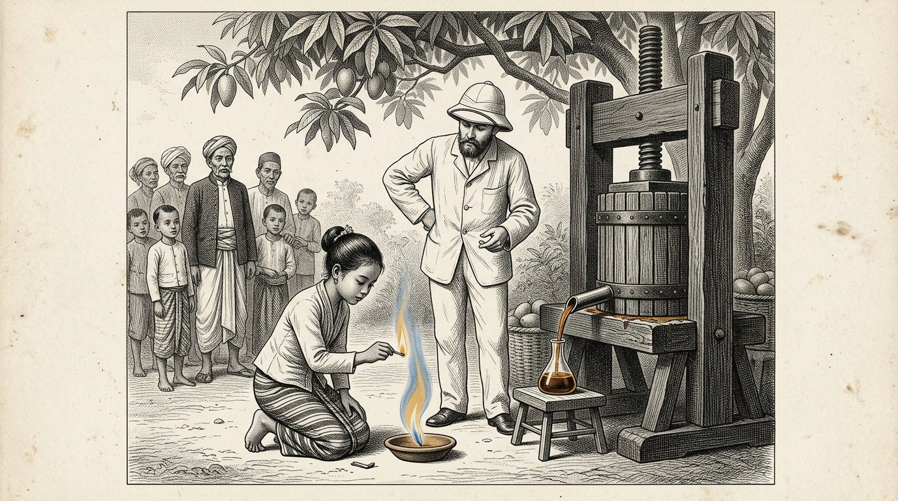
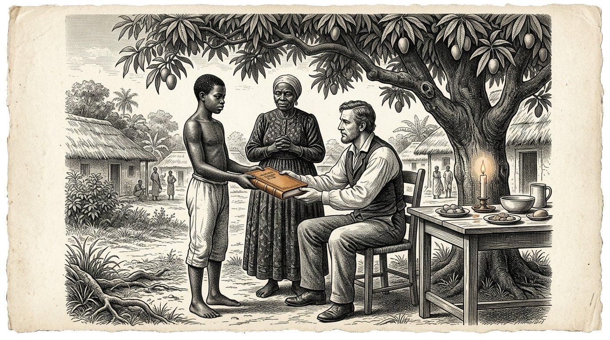

LIBRO CINQUE
Il Kosaris
Il libro del partner

LIBRO CINQUE
Il libro del partner
La lettera che andò innanzi
Prologo — pronunciato da Kosus
Io sono Kosus. Quando aprirete questo quinto libro, saranno trascorsi tredici anni dalla mia morte, e Petros ha ormai tenuto tra le mani così spesso lo scritto che Alkion gli diede che la rilegatura di pelle si è fatta morbida. Questo non è più il mio libro. Questo è il libro di Petros. Parlo nel prologo soltanto perché lo impone l’abitudine e perché voglio dire una cosa prima che cominciate.
Il Libro Quattro riguardava un liquido. Il Libro Cinque riguarda il rapporto tra due persone che vogliono creare insieme quel liquido in un luogo dove non è ancora stato creato. È una domanda diversa. Chi crea un liquido ha bisogno della tecnica. Chi costruisce un rapporto ha bisogno della bilancia di Timaris. La prima può essere appresa. Il secondo può essere rovinato.
Petros partì dal villaggio portuale con una cassa, una bottiglia e il quaderno. Prima di partire scrisse una lettera. La lettera lo precedette sulla nave che salpò tre settimane prima di lui. Sulla lettera figuravano il nome Yara e l’indirizzo di un villaggio situato sull’equatore, dove Alkion e Demira erano stati anni prima. Nella lettera c’era scritto: sono Petros, allievo di Kosus, successore di Alkion. Non vengo per prendere. Vengo per chiedervi se posso imparare da voi e per mostrarvi ciò che ho imparato.
La lettera arrivò tre settimane prima di Petros. Yara la lesse. La lesse due volte. Poi la ripose in un cassetto e non disse nulla a nessuno. Ciò che giace nel cassetto riaffiora in questo libro quando sarà l’ora.
Chi legge questo libro non impara come si esporta un liquido. Chi legge questo libro impara come si costruisce insieme un sistema senza che, alla fine, una delle due parti pensi di aver perso. È una cosa più piccola da imparare di quanto sembri. Ed è una cosa più grande da fare di quanto tutti dicano.
Lascio la parola a Petros. Da qui in poi, è lui.
Kosus dice:una lettera che precede il viaggiatore è la prima fibra della bilancia appesa tra due persone. Chi arriva senza lettera deve affrettarsi. Chi lascia che la lettera giunga prima di lui, arriva a suo tempo.
Di Jacobus van Merksteijn
Questo è il Libro Cinque dei Kosaris. Segue il Libro Quattro, nel quale il liquido scaturì dall’erba e il villaggio si mantenne caldo in un inverno senza gas. Alla fine del Libro Quattro, Alkion consegnò lo scritto di Kosus a Petros, e Anthea chiuse il libro con la promessa che il primo allievo di Petros avrebbe scritto a sua volta il Libro Sei.
Petros salpa dunque in questo libro. Si dirige verso l’equatore, dove da giovane aveva già viaggiato per quattro anni. Giunge in un villaggio dove vive Yara, che conoscete dal Libro Uno, Parte X, come la donna dal vestito rosso. Non è la stessa di allora — è invecchiata, e la cooperativa che lei e i suoi anziani hanno fondato è cresciuta fino a diventare qualcosa che ha attirato l’attenzione di tre paesi confinanti.
Ho scritto questo libro dopo tre incontri con Petros negli ultimi anni e dopo aver letto le lettere che ha scritto ad Alkion e Anthea. Le lettere stesse sono rimaste in possesso di Anthea. Ciò che leggete è il mio riassunto di quanto mi ha raccontato e di quanto le lettere mi hanno fatto comprendere.
Chiamo una cosa con il suo nome. Il Libro Cinque non parla di aiuti allo sviluppo né di esportazione di energia. Parla di cosa significhi arrivare nel Sud in quanto settentrionale senza portare con sé i presupposti del secolo scorso. È più difficile di quanto sembri. Petros lo sa, e il libro mostra cosa accade quando, nonostante tutto, ci prova. In alcuni punti fallisce. Yara lo aiuta a rimettersi in carreggiata. In altri punti, gli insegna qualcosa che ancora le mancava. Questa è la bilancia che pesa questo libro.
Chi legge questo libro e pensa che parli dell’Africa, legge male. Parla di come due persone di due continenti imparino a costruire insieme qualcosa che nessuna delle due avrebbe potuto realizzare da sola. È precisamente questo che intendono i quattro pilastri quando sono stati messi per iscritto.
Malta, agosto 2027.
Parte 1

Dove Petros giunge all’equatore, Yara lo accoglie senza tendere la mano, e la prima settimana viene dedicata ad ascoltare invece che a parlare.

Petros scese dalla barca su un molo dove il sole, alle sette del mattino, era già più alto di quanto sarebbe stato a mezzanotte a Malta, se fosse stato lì. La sua cassa era accanto a lui. La borsa di cuoio gli pendeva dalla spalla. La bottiglia di idrolizzato era avvolta nelle sue camicie, sul fondo della borsa.
C’era un ragazzo sul molo che conosceva il suo nome. Il ragazzo disse: Lei è Petros. Io sono Baraka. Yara mi ha mandato. Venga.
Petros disse: non ho né cavallo né carro. Baraka disse: va bene. C’è un’automobile. Petros disse: avete un’automobile? Baraka disse: il villaggio ha un’automobile. Oggi posso guidarla perché vengo a prendervi.
Scesero lungo il molo fino a una vecchia Toyota gialla, fissata con una corda al punto in cui mancava la portiera. Baraka caricò la cassa nel bagagliaio. Disse: è pesante? Petros disse: contiene una pressa e un libro. La pressa non è grande, ma è pesante. Baraka disse: allora è pesante.
Si inoltrarono per un’ora verso l’interno. La strada era rossa e sconnessa, e Petros sentiva la cassa scivolare dietro di sé a ogni sobbalzo. Baraka guidava lentamente e senza fretta. Disse: «Ha fame?». Petros disse: «Non ancora». Baraka disse: «Bene, allora, perché mangiamo soltanto dopo l’arrivo».
Passarono accanto ad alberi di mango, a un gregge di capre e a tre donne con fagotti sulla testa. Baraka le salutò senza fermarsi. Petros disse: qui tutti si salutano. Baraka disse: non tutti. Quelle sono Fatou, Aminata e Mariam. Passano di qui ogni mattina. Se passasse qualcuno che non conosco, non lo saluterei. È diverso.
Petros disse: penso di avere ancora molto da imparare su chi è chi qui. Baraka disse: non è difficile. Deve ascoltare i nomi. Quando qualcuno ha un nome, sa che gli altri lo conoscono. Quando passa qualcuno senza nome, sa che non è di qui. Questo è tutto.
Arrivarono a un villaggio con una lunga fila di case basse e un grande albero di mango al centro di uno spiazzo. Sotto l’albero di mango sedeva su una sedia una donna con un vestito rosso. Era più anziana di come Petros si era immaginato Yara. Si alzò quando vide l’auto. Si avvicinò all’auto. Non tese la mano.
Lei disse: benvenuto, Petros, discepolo di Kosus. Siediti per prima cosa. Parleremo questa sera. Oggi ascolti. Petros annuì. Disse: grazie, Yara. Si sedette sulla panca sotto l’albero di mango. Baraka gli portò dell’acqua. E Petros ascoltò per tutto il pomeriggio i suoni del villaggio senza dire una parola.
Kosus dice:chi arriva in una terra straniera e parla il primo giorno, parla di sé. Chi il primo giorno ascolta, il secondo giorno parla degli altri. Solo chi parla degli altri viene compreso il terzo giorno.
E nessuno aveva mentito.

Yara tornò sul finire del pomeriggio. Disse: vieni con me. Mangiamo. Condusse Petros a una lunga tavola di legno che era stata allestita sotto un tetto di foglie essiccate. A tavola c’erano già dodici persone: Baraka, tre uomini anziani, quattro donne della stessa età di Yara e quattro bambini tra i sette e i tredici anni.
Yara disse: questo è Petros. Viene da molto lontano. Conosce Alkion e Demira. Era qui dieci anni fa, ma probabilmente non lo conoscete più, perché allora viaggiò per quattro anni attraverso tutti i villaggi della costa, senza fermarsi in alcun luogo per più di un mese.
Il più anziano degli uomini al tavolo disse: non avete dimorato abbastanza a lungo in un solo luogo perché qualcuno vi conoscesse. Questo accade più spesso tra i settentrionali. Petros disse: lo so, e questa volta voglio fare diversamente. Voglio restare qui finché sarà necessario, e non meno a lungo.
Yara disse: quanto è necessario? Petros disse: non lo so. Questo lo imparo da lei. Yara disse: è una buona risposta. Ricordi che è stato lei a darla. Quando fra tre mesi diventerà impaziente, glielo ricorderò.
Mangiarono. Il cibo era riso con pollo e una salsa verde che Petros non conosceva. Chiese che cosa fosse. Una delle donne disse: «È Moringa». Petros disse: «Questa la conosco. Noi la pressiamo insieme all’erba». La donna disse: «La pressate?». Petros disse: «Le sue foglie, insieme al Juncao. Questo rende limpido il liquido».
La donna disse: la mangiamo. La essicchiamo e la maciniamo e la mettiamo nella salsa. Non la pressiamo. Petros disse: forse è meglio così. Non avevo mai pensato che si potesse mangiare anche la Moringa. L’avevo sempre considerata una sostanza ausiliaria.
Yara disse: questa è la prima cosa che imparate da noi. Ciò che voi chiamate un eccipiente, per noi è una coltura. Ciò che voi chiamate una coltura, per noi è una medicina. Quando spremete la Moringa, sprecate qualcosa. Quando la mangiate, diventate più forti. Se dobbiamo lavorare insieme, dobbiamo prima concordare che cosa mangiamo e che cosa spremiamo. Altrimenti rovinate la nostra cucina e ci offendete senza saperlo.
Petros annuì. Disse: lo annoto. Yara disse: scrivilo più tardi. Ora mangia. Mangiarono. Le stelle sorsero sopra il tetto di foglie. Petros sentì di essere più lontano da casa di quanto non fosse mai stato, e al tempo stesso sentì di trovarsi esattamente nel posto giusto.
Kosus dice:chi, in una terra straniera, riconosce una sostanza ausiliaria che là è una coltura, deve sapere che non è arrivato da un fornitore. È arrivato in una cucina. Non insulti la cucina, o non mangerà mai più con gli altri.
E nessuno aveva mentito.

La seconda sera Yara condusse Petros a casa sua. Era una casa lunga e bassa, con una veranda. Nella veranda c’era uno scrittoio. Sullo scrittoio c’era un cassetto. Nel cassetto c’erano delle carte.
Yara aprì il cassetto. Ne trasse una lettera. Disse: questa l’ha scritta tre settimane prima del suo arrivo. L’ho letta due volte. L’ho riposta in questo cassetto. Non ho detto a nessuno di averla ricevuta.
Petros disse: perché no? Yara disse: perché volevo vedere se sarebbe arrivato come prometteva la lettera. Nella lettera scrisse che non veniva per prendere. Scrisse che veniva per chiedere. Per tre settimane ho osservato come sarebbe arrivato. Oggi l’ho visto arrivare. Non è venuto per prendere. È venuto per chiedere. Ora la lettera può uscire dal cassetto.
Petros disse: e se fossi arrivato in modo diverso? Yara disse: allora la lettera sarebbe dovuta rimanere nel cassetto. E domani vi avrei detto che eravate il benvenuto in un villaggio più avanti, dove vive mio cognato. È educato e ospitale e vi avrebbe ospitato per tre settimane senza che aveste imparato nulla da noi. Allora sareste tornato con dei racconti e non con la conoscenza.
Petros disse: come facevate a sapere che sarei stato diverso? Yara disse: non lo sapevo. Lo speravo. La vostra lettera era scritta diversamente dalle lettere che ricevo dagli altri settentrionali. Loro esordiscono sempre con ciò che vengono a portare. Voi avete iniziato con ciò che venivate a chiedere. Era un buon segno. Ma i segni possono mentire. Perciò la lettera ha aspettato tre settimane.
Petros chiese: che cosa mi hai scritto in risposta? Yara disse: nulla. Non rispondo alle lettere di persone che non conosco. Rispondo alle persone che arrivano. È diverso. La carta mente facilmente. Anche le persone mentono, ma in loro riesco a vedere quando.
Petros annuì. Disse: allora la lettera nel cassetto è ora un inizio. Yara disse: no, è una fine. Ciò che faremo da domani non dovrà più scriverlo. Parliamo. Costruiamo. E quando andrà a casa, scriverà ad Alkion ciò che è stato costruito, non ciò che è stato detto. Questo è il modo.
Petros dispiegò la lettera. Vide la propria grafia di tre mesi prima. Provò qualcosa di strano: la lettera non era più sua. Era di Yara. Per tre settimane lei aveva portato quelle parole, senza che lui lo sapesse. Ora gliele restituiva, non come risposta, ma come una chiave.
Kosus dice:una lettera che inviate in anticipo non è più vostra non appena arriva. È portata da chi la legge e restituita nell’ora che il lettore sceglie. Chi scrive, lo sa. Chi scrive senza saperlo, scrive soltanto a se stesso.
E nessuno aveva mentito.
Parte II
Parte 2

In cui Petros scopre che qui l’erba viene coltivata da quindici anni, che gli anziani ne sanno più di lui e che la pressa che ha con sé fa sorgere la domanda su ciò che lascia mancare.

La terza mattina Yara portò Petros nel campo dietro il villaggio. Vi cresceva Juncao alto quanto un uomo, fin dove arrivava lo sguardo. Tra ogni filare di Juncao si ergevano alberi di Moringa, distanti circa tre metri l’uno dall’altro.
Petros rimase fermo al margine del campo. Disse: da quanto tempo è qui? Yara disse: questo appezzamento, da quindici anni. Quello dall’altra parte del fiume, da dodici anni. Quello presso il villaggio confinante, da nove anni. Nel nostro distretto abbiamo in tutto circa seicento ettari.
Petros disse: chi ti ha insegnato questo? Yara disse: mia madre mi ha insegnato a piantare. L’aveva imparato da un ingegnere cinese venuto qui a lavorare negli anni Ottanta, che le aveva dato il Juncao. Allora lei aveva diciotto anni e io tre. Dieci anni dopo ci ho piantato in mezzo la Moringa, dopo una conversazione con un vecchio agricoltore che mi raccontò che la Moringa protegge le radici.
Petros disse: dunque, non siamo stati noi a inventare tutto questo. Yara disse: no. Il vostro Alkion non l’ha inventato. Il vostro Kosus non l’ha inventato. Io non l’ho inventato. Nessuno l’ha inventato. L’erba era qui prima che scoprissimo che cosa potevamo farne.
Petros disse: e la pressa? Yara disse: noi non lo facciamo. Tagliamo l’erba e la diamo da mangiare ai nostri animali. Facciamo seccare le foglie e le bruciamo nelle nostre stufe. Mangiamo la Moringa. Con le radici di Juncao prepariamo una medicina contro la febbre. Non usiamo la pressa perché non abbiamo mai visto una pressa abbastanza piccola da poter stare qui, sotto il mango, senza una fabbrica tutt’intorno.
Petros disse: ne ho uno con me. Nella cassa. Yara disse: lo so. Baraka ne ha sentito il peso. Mi ha detto che dentro c’è qualcosa di pesante, che non è né un libro né una bottiglia. Ho indovinato. Voglio vedere la pressa oggi pomeriggio.
Petros disse: e se funziona? Che cosa significa per lei? Yara disse: non lo so. Prima voglio vedere. Se funziona, parleremo dopo. Se non funziona, non avremmo dovuto parlare. Parlare costa tempo, e fare promesse costa ancora più tempo. Facciamo il contrario.
Petros rifletté. Disse: è l’ordine inverso rispetto a come l’ho imparato a casa. Yara disse: lo so. Da voi prima si firma un contratto e poi si guarda se funziona. Da noi prima si osserva e poi ci si accorda. Entrambe le cose sono possibili. Noi facciamo a modo nostro perché qui abitiamo noi e voi siete in visita.
Kosus dice:chi arriva con una pressa e pensa di portare qualcosa, deve prima imparare che la coltura è già in piedi e che la gente già mangia. La pressa aggiunge qualcosa che non c’era. Non sostituisce qualcosa che c’era. Chi confonde le due cose perde la gente prima ancora di aver montato la pressa.
E nessuno aveva mentito.

Quel pomeriggio montarono la pressa sotto l’albero di mango. Baraka portò fuori dalla cassa i componenti. Gli anziani, tre donne e sette bambini stavano lì intorno, disposti a semicerchio.
Petros mostrò come si taglia. Baraka portò dal campo un fascio di Juncao e una manciata di foglie di Moringa. Petros mostrò come si stratifica: erba, foglia, erba, foglia. Serrò la vite. Tutti guardavano.
Non venne nulla. Petros girò più forte. Ancora non venne nulla. Girò con tutta la forza che aveva. Venne una goccia. Poi due. Poi più nulla.
Petros arrossì. Pensò: l’ho fatto venti volte a Malta e sei volte nel villaggio portuale. Perché qui non funziona?
Yara non disse nulla. Guardò il campo e poi la pressa. Disse: quanto era vecchia l’erba che aveva pressato a casa? Petros disse: tre mesi dopo l’ultima falciatura. Yara disse: e questa? Indicò il fascio sulla pressa. Petros disse: non lo so. Baraka?
Baraka disse: quest’erba ha nove mesi. Non abbiamo falciato questo campo da gennaio perché lo abbiamo lasciato crescere per il seme. Falceremo solo la prossima settimana.
Yara disse: allora la vostra pressa è per un’erba più giovane di quella che oggi stava qui. Quando falceremo la prossima settimana, ci riproveremo. Oggi abbiamo imparato che la vostra pressa è più precisa di quanto sia regolata qui la vostra ricezione. Non è colpa vostra né nostra.
Petros lasciò andare la pressa. Disse: avrei dovuto chiederlo. Yara disse: sì. Avremmo potuto dirlo anche noi. Non l’abbiamo detto perché volevo vedervi lavorare. Volevo sapere se avrebbe ammesso che qualcosa era andato storto. L’ha ammesso. Era più importante che sapere se avrebbe funzionato.
Petros disse: era una prova. Yara disse: non era una prova. Era così che scopriamo chi Lei è. Se si fosse arrabbiato con la pressa, con Baraka o con me, domani mattina avremmo ordinato per Lei un’automobile diretta al porto. Lei non si è arrabbiato. È rimasto nell’errore. Questa è ALETHERIS. Le siamo grati per averlo mostrato.
Uno degli anziani ai margini disse: ora sappiamo che possiamo parlare con voi. La settimana prossima pressiamo insieme l’erba giovane. Se allora ne uscirà qualcosa, avremo qualcosa di cui parlare. Se allora non ne uscirà nulla, resterete comunque ancora un mese. Nel frattempo, potrete contare fino a cento nella nostra lingua.
Petros rise. Era la prima volta da quando era arrivato. Disse: non so ancora farlo. Ma lo imparerò.
Kosus dice:una dimostrazione che fallisce in compagnia di persone che ancora non conoscete è la via più breve verso la reciproca sincerità. Chi, in una dimostrazione riuscita, cerca di mostrare sincerità, non va oltre il fare impressione. Chi, in una dimostrazione fallita, ammette il proprio errore, ha messo in equilibrio la bilancia prima che si fosse scambiato alcunché.
E nessuno aveva mentito.

Una settimana dopo falciarono una parte del campo adiacente. L’erba che portarono dentro era di un verde chiaro, morbida nella fibra e aveva un odore più dolce di quello della vecchia erba della settimana precedente.
Montarono di nuovo la pressa sotto l’albero di mango. La stessa mezza cerchia era disposta tutt’intorno, gli stessi bambini, gli stessi anziani. Baraka dispose gli strati.
Petros strinse la vite. Questa volta, dopo dieci minuti, ne uscì un sottile zampillo. Ambrato, limpido, scintillante. In venti minuti arrivò a mezza bottiglia. Yara osservava. Non disse nulla.
Al termine della pressa, Petros disse: vuole assaggiare? Yara disse: su cosa? Petros disse: sulla lingua. Lei rifiutò. Disse: assaggio soltanto qualcosa che abbiamo fatto insieme e che è nostro. Questo è ancora suo. Assaggerò più tardi.
Petros disse: e la fiamma? Yara disse: è per i bambini. Prese una piccola ciotola di terracotta e la porse a una bambina di otto anni che le stava accanto. Disse: versaci dentro un cucchiaio. La bambina lo fece. Yara prese un fiammifero e lo porse alla bambina. Disse: accendi.
La bambina accese. Si levò una fiamma azzurra dal nucleo giallo dorato. I bambini fecero un passo indietro. Poi guardarono di nuovo.
Yara disse: questo è ciò che avete portato. Grazie per averlo mostrato ai bambini invece che a me. Petros disse: perché è importante? Yara disse: perché i bambini lo ricorderanno per tutta la vita, mentre noi non abbiamo ancora preso alcuna decisione. Se aveste mostrato prima la fiamma a me, sarei stata io a dover decidere qualcosa. Ora i bambini sono sette testimoni che non vi devono nulla, ma ricordano tutto. Questo è meglio per voi e meglio per noi.
Petros annuì. Disse: non ci avevo pensato. Yara disse: lo so. Vorrei chiederle una cosa. Quanti litri riuscite a ricavare da questa pressa ogni giorno? Petros fece i conti. Disse: dieci litri, se facciamo aiutare quattro adulti. Yara disse: e quanta erba ci vuole? Petros disse: circa duecento chili al giorno. Yara disse: e quei duecento chili, come arrivano dal campo alla pressa? Petros non lo sapeva. Yara disse: allora è questo il prossimo aspetto che dobbiamo esaminare. La pressa senza una catena che la alimenti è un pezzo di legno. La pressa con una catena è un sistema. Noi stiamo costruendo un sistema.
Kosus dice:una pressa è un pezzo di legno. Una catena di persone che alimentano la pressa e imparano da essa è un sistema. Chi vende una pressa vende legno. Chi costruisce un sistema condivide qualcosa che rimane dopo la morte della prima pressa.
E nessuno aveva mentito.
Parte III
Parte 3

In cui Petros e Yara costruiscono insieme una seconda pressa di legno locale, in cui le donne imparano tutto ciò che si può fare con il liquido, e in cui il villaggio ha per la prima volta qualcosa che è un nucleo e non una catena.

Yara condusse Petros dal falegname del villaggio. Si chiamava Abdoulaye. Era vecchio e le sue mani erano di quelle che non tremano più, benché avesse ottant’anni.
Yara disse: Abdoulaye, vogliamo costruire un’altra pressa. Questa volta con il nostro proprio legno. Così, quando Petros tornerà al nord, avremo quattro presse e non una sola che vada con lui.
Abdoulaye guardò la pressa di Petros. Ne tastò il legno. Disse: questo è rovere di una terra fredda. Noi non abbiamo rovere. Abbiamo palissandro e legno di mango. Petros disse: quale dei due può raccomandare? Abdoulaye disse: il palissandro è più forte e non si spacca. Il mango è più leggero, ma meno durevole. Per una pressa che deve durare quindici anni, il palissandro è migliore.
Petros disse: può rifare la pressa in palissandro? Abdoulaye disse: posso rifarla. Posso farla meglio. La vostra pressa ha una vite fissata in un solo dado. Io ne metterei un secondo sopra, perché uno dei due si usura. La vostra pressa non ha staffe di serraggio ai lati. Io le aggiungerei, perché così l’erba rimane serrata uniformemente. La vostra pressa non ha una canaletta in fondo. Io poserei una canaletta di legno che conduca il liquido fino alla bottiglia senza che goccioli. In questo modo la vostra pressa perde un litro al giorno. È il tre per cento. In quindici anni sono quattro mesi di produzione.
Petros ascoltò. Disse: è questo che voglio imparare da voi. Potete aiutarmi ad aggiungere anche quei miglioramenti alla mia pressa, così da poterli applicare a casa? Abdoulaye disse: sì. Costruiamo insieme due presse. Io vi insegno la mia e vi insegno dove la vostra può essere migliorata. Voi mi insegnate che cosa sia il liquido in sé. Se lo facciamo per tre settimane, avremo quattro presse: le mie due nuove, la vostra migliorata e la conoscenza in quattro teste.
Yara disse: e io le pagherò quanto chiede dalla cassa comune. Abdoulaye disse: da lei non chiedo nulla. Lei è mia sorella. A Petros chiedo di insegnare a Baraka e Aminata a preparare e conservare il liquido, e di partire per casa, al termine di tre settimane, senza la pressa, lasciando qui la sua pressa. Petros guardò Abdoulaye. Guardò Yara. Disse: è un buon prezzo.
Yara annuì. Disse: ora costruiamo un sistema.
Kosus dice:un artigiano che segnala i difetti della vostra pressa senza insultarvi è l’artigiano che cercate. Trovatelo. Pagatelo in conoscenza e non soltanto in moneta. La conoscenza lo tiene al vostro fianco. La moneta lo rende soltanto vostro fornitore.
E nessuno aveva mentito.

Mentre Abdoulaye e Petros lavoravano alle presse, il quarto giorno tre donne vennero da Yara. Si chiamavano Aminata, Fatou e Aissatou. Ciascuna portava una piccola scatoletta di carbone.
Aminata disse: Yara, sentiamo dire che il liquido brucia senza fumo. Vogliamo sapere se può anche servire a cucinare. Il nostro carbone diventa costoso, e il legno che raccogliamo ci costa due ore di cammino al giorno. Se il liquido può servire a cucinare, risparmiamo tempo. Yara fece venire Petros. Lei disse: può rispondere a questo?
Petros disse: lei sa cucinare. Nel nostro villaggio ne abbiamo costruito in casa un piccolo fornello a bruciatore che consuma mezzo litro al giorno e con cui una famiglia cucina tre pasti. Aminata disse: e il bruciatore? Petros disse: lo ha progettato Wilm, il nostro fabbro. Non ho con me un bruciatore. Ho però i disegni.
Fatou disse: abbiamo un fabbro. Si chiama Ibrahim. Può rifarlo? Petros disse: lasciatemi parlare con lui domattina. Se è in grado di leggere i disegni, allora sì.
La mattina seguente, Petros, Yara e le tre donne andarono da Ibrahim. Era più giovane di quanto Petros avesse immaginato, sui trent’anni. Esaminò i disegni. Disse: sembra una lampada che conosco. Posso costruirla. Per queste donne del villaggio? Aminata disse: prima per noi tre. Se funziona, per le altre.
Ibrahim disse: dammi tre settimane e tre chili di rame. Aminata disse: il rame lo abbiamo. Fondiamo vecchie tubature di un’antica missione francese che non viene più utilizzata.
Petros guardò Yara. Yara disse: lo vede? Petros disse: sì. Lo vedo. Yara disse: che cosa vede? Petros disse: vedo che avete un sistema che funziona senza di me. Il bruciatore viene fabbricato da Ibrahim. Il rame proviene dalla stazione missionaria. La domanda viene dalle tre donne. Il liquido vengo a portarlo io. Solo quest’ultima cosa è dentro di me. Se impara a fabbricarla, io non sarò più necessario.
Yara disse: è esattamente ciò che stiamo facendo. E questo non è un male per lei. Può allora andare nel luogo successivo senza che noi dipendiamo da lei. Quando è legato a qualcuno che ha bisogno di lei, non può mai andare. Quando ha liberato qualcuno da lei, anche lei si è liberato.
Petros rimase a lungo in silenzio. Poi disse: è esattamente ciò che mi ha insegnato anche Kosus. Ora lo sento per la seconda volta, da un’altra bocca, e torna meglio della prima.
Kosus dice:quando liberate qualcuno da voi stessi, anche voi diventate liberi. Quando legate qualcuno a voi stessi, perdete la libertà di andare altrove. La via più breve verso la vostra libertà passa attraverso la libertà di chi aiutate.
E nessuno aveva mentito.

Alla fine del suo primo mese, Petros scrisse per la prima volta una lettera ad Alkion. Scrisse alla luce di una lampada che ardeva del proprio liquido. Scrisse su carta che Yara gli aveva dato. La lettera era breve.
Alkion, sono qui da un mese. Finora non ho imparato nulla di nuovo sull’idrolizzato. Ho però imparato tre cose su come si lavora con persone che ne sanno da vent’anni più di te e non hanno bisogno di te. Le elenco.
Per prima cosa. Non presentarti con una soluzione. Presentati con una pressa, un quaderno e una bottiglia. Lascia che la gente guardi. Lascia che facciano domande. Rispondi soltanto a ciò che ti viene chiesto, e non a ciò che avresti voluto raccontare.
In secondo luogo. Non renda perfetta la sua prima dimostrazione. Quando fallisce e lei ammette l’errore, conquista più rapidamente la fiducia di quando mostra qualcosa di perfetto, di cui non riescono a valutare come abbia fatto. La perfezione suscita diffidenza nel sud.
Terzo. Nel frattempo, costruisca qualcosa che funzioni senza di lei. Ogni dispositivo che porta con sé deve poter essere riprodotto localmente. Ogni conoscenza che porta con sé deve poter essere sostenuta localmente. Il giorno in cui partirà, tutto ciò che sarà lì dovrà restare in piedi senza di lei.
Ogni settimana scopro che Yara è tre passi avanti a me. Credevo di essere venuto qui a portare qualcosa. Scopro che qui vengo a imparare qualcosa. Penso che Kosus lo sapesse fin dall’inizio e che non l’avesse mai messo esplicitamente per iscritto né a me e Alkion, né a voi e Anthea, né a chiunque altro, perché sapeva che dovevamo scoprirlo da soli.
Rimango qui per il momento. Credo che Baraka scriverà il Libro Sei, ma non voglio ancora dirglielo, perché ha dodici anni e sarebbe un peso eccessivo. Aspetto che compia sedici anni. Allora gli consegnerò lo scritto.
Saluta Demira e Anthea. Di’ ad Anthea che ho portato con me il suo Libro Quattro e che Yara ha letto il prologo e ha detto: «Quell’uomo sapeva quel che faceva». È la lode più alta che possa uscire dalla sua bocca.
Il tuo allievo, Petros.
Piegò la lettera. La mise in una busta. La mattina seguente la consegnò a un mercante diretto al porto, che promise di metterla su una barca diretta in Europa. Sei settimane dopo, la lettera arrivò ad Alkion. Lei la lesse. Sorrise. Disse a Demira: è arrivato. Ed è arrivato a se stesso nello stesso momento. Questo è il genere migliore di arrivo che si possa fare.
Kosus dice:una lettera che viene da lontano e che è sincera cambia il lettore più di cento conversazioni con chi gli è vicino. Chi ha un allievo lontano da casa deve conservare le sue lettere. Insieme raccontano ciò che l’allievo impara in dieci anni. Senza le lettere, perdiamo quei dieci anni.
E nessuno aveva mentito.
Parte IV
Parte 4

In cui un funzionario della capitale viene a sapere della cooperativa e passa a porre domande cortesi che cortesi non sono, e in cui Yara Petros mostra come si ricevono uomini simili senza dare loro ciò che sono venuti a prendere.

Nel secondo mese della permanenza di Petros, un pomeriggio una jeep grigia entrò nel villaggio. Dalla jeep scese un uomo in abito di colore chiaro. Era vestito con cura e le sue scarpe erano sorprendentemente pulite per qualcuno che aveva appena percorso una strada di terra rossa.
Chiese di Yara. Baraka gli indicò l’albero di mango. L’uomo vi si diresse. Yara sedeva sulla sua sedia. Non si alzò. Disse: benvenuto. Siediti.
L’uomo si sedette. Si presentò come Monsieur Diallo, consigliere del ministero dell’Industria nella capitale. Disse: signora Yara, ci giungono buone notizie sulla sua cooperativa. Vorremmo vedere se possiamo esserle d’aiuto.
Yara disse: di quale servizio? Diallo disse: abbiamo un programma per far crescere le iniziative locali. Quando una cooperativa raggiunge una certa dimensione, può accedere a una partnership con uno dei nostri investitori internazionali. Possiamo aiutarla a compiere quel passo.
Yara disse: non avevamo pianificato quel passo. Diallo disse: questo lo capisco. Ma ora si è aperta una possibilità. C’è un gruppo di Dubai interessato ai biocarburanti e disposto a investire in misura sostanziale.
Yara disse: e vorrebbero? Diallo disse: una partecipazione di maggioranza. In cambio di capitale e dell’apertura del mercato. Lei continuerebbe a collaborare come partner locale.
Yara disse: non abbiamo alcuna quota di maggioranza da cedere. Non siamo un’azienda. Siamo un villaggio che fa qualcosa insieme. Non c’è nulla da dare a nessuno.
Diallo sorrise educatamente. Disse: signora, possiamo occuparcene. Possiamo aiutarla a costituire un’entità giuridica che renda possibile tutto questo. È un piccolo lavoro amministrativo.
Yara disse: e quando l’entità sarà costituita e la partecipazione di maggioranza sarà venduta, che cosa ne sarà del villaggio? Diallo disse: il villaggio resterà. Riceverete delle entrate. Riceverete assistenza tecnica. Diventerete parte di un insieme più grande.
Yara disse: e le decisioni? Diallo disse: vengono prese dai proprietari, come in ogni impresa. Ma lei ha sempre voce in capitolo.
Yara rimase a lungo in silenzio. Poi disse: ho preso decisioni per trent’anni riguardo a questo campo e a quest’erba. Chiedete a mia madre, che ha preso decisioni per quindici anni prima di me. Lei decise dove sarebbero state le file. Io decisi della Moringa tra di esse. Mia figlia deciderà che cosa verrà dopo trent’anni di Moringa. Se vi do la nostra maggioranza, mia figlia darà a qualcun altro la sua decisione.
Diallo disse: non è questo il caso, signora. Yara disse: è proprio così. So come funzionano questi contratti. Il villaggio vicino al mio ne ha firmato uno per il cotone. Ora coltivano ciò che i proprietari dicono loro di coltivare. Non sono più poveri, ma non sono più un villaggio. Sono una fabbrica senza mura.
Diallo rimase cortese. Disse: è una scelta, signora. La rispetto. Volevo soltanto menzionarle la possibilità.
Yara disse: grazie per averla nominata. Ora so che esiste e che la nominate anche in altri villaggi. Parlerò con gli altri anziani della nostra regione. Insieme sapremo cosa fare quando passerete altrove.
Diallo comprese che la conversazione era terminata. Si alzò. Disse: signora, posso ancora chiedere la vostra ospitalità per pernottare qui questa sera? La strada del ritorno è lunga. Yara disse: può farlo. Baraka vi indicherà la foresteria.
Diallo se ne andò. Petros, che per tutto il tempo era rimasto seduto a terra nell’ombra e non aveva detto nulla, guardò Yara. Yara disse: perché è rimasto in silenzio? Petros disse: perché questo lo ha fatto molto meglio di quanto avrei fatto io.
Kosus dice:un uomo in un abito impeccabile che vi chiede della vostra maggioranza non viene per il vostro bene. Viene per la vostra firma. Chi rimane cortese e mantiene la conversazione al proprio ritmo, lo lascia andare senza firma e senza nemico. Chi si adira non guadagna nulla e perde la cortesia del proprio villaggio.
E nessuno aveva mentito.

Tre settimane dopo la visita di Diallo arrivò una lettera dalla capitale. Era su carta intestata ufficiale, in una busta rossa. Yara la aprì sulla veranda, con Petros e Baraka come testimoni.
La lettera proveniva da un direttore del ministero dell’Agricoltura. Scriveva: signora Yara, siamo stati informati che nel suo villaggio si svolgono attività industriali non registrate. Le chiediamo di presentarsi presso il nostro ufficio entro trenta giorni, per registrare le sue attività e richiedere le autorizzazioni necessarie.
Petros disse: è la stessa lettera che ho ricevuto a Bruxelles. Yara disse: no. È un’altra lettera. È più tagliente. A Bruxelles volevano mettervi alla prova. Qui vogliono stritolarvi. Diallo ha riferito che non collaboriamo. Ora ci provano da un’altra porta.
Petros disse: che cosa intende fare? Yara disse: ciò che deve essere fatto. Andrò nella capitale, ma non da sola. Porterò con me tre anziani, e non porterò lei. Lei è del nord, e la sua presenza fornirebbe loro argomenti che altrimenti non avrebbero.
Petros disse: quali argomenti? Yara disse: che abbiamo un operatore straniero. Che lei approfitta del nostro lavoro. Che ci sfrutta. Potrebbero dirlo tutti, e tre giornali della capitale lo riprenderebbero. Quando parto senza di lei, non hanno nulla di cui scrivere.
Petros disse: e che cosa dice loro? Yara disse: che abbiamo una consuetudine locale. Che qui l’erba è presente da quindici anni. Che la pressatura è un’attività del villaggio, non un’industria, e non necessita di licenza. Se insistono, diciamo che siamo disposti a chiedere la licenza adatta a un’attività del villaggio. Chiediamo la licenza più piccola che esista. Loro sperano di costringerci a rientrare nella più grande. Noi lo evitiamo, prendendo volontariamente posto nella più piccola.
Petros rifletté. Disse: è esattamente ciò che abbiamo fatto anche a Bruxelles. Abbiamo chiesto di non essere approvati e abbiamo accettato di non poterci espandere. Per questo siamo rimasti sotto il radar.
Yara disse: è stato un buon esercizio per voi. Penso che funzionerà anche qui. C’è una differenza. A Bruxelles la siepe di spine è vecchia e cresce lentamente. Qui la siepe di spine è giovane ed è più tagliente. È stata piantata da persone che sanno di non avere ancora tutto il denaro. Mordono più a fondo.
Petros disse: perché allora non devo venire anch’io? Yara disse: perché, quando morderanno più a fondo, voglio parlare attraverso le loro spalle con i deliberanti seduti dietro di loro e con il popolo che sta dietro quei deliberanti. Un simile colloquio lo conduco nella mia lingua, con la mia gente. La Sua presenza mi ostacolerebbe.
Petros annuì. Disse: capito. Rimango qui e proseguo con Abdoulaye alla seconda pressa. Yara disse: sì. E quando tornerò, avremo una pressa in più e un problema in meno. Questo è l’ordine giusto.
Kosus dice:un attacco di una grande potenza non si respinge con una potenza maggiore. Lo si respinge chiedendo di essere collocati nella categoria più piccola e accettandola. L’aggressore voleva che foste nella categoria più grande, perché è lì che si trovano i suoi uncini. In quella più piccola non ve ne sono. Là non servono.
E nessuno aveva mentito.

Yara era via da dieci giorni. Petros lavorava con Abdoulaye. Avevano pronta la seconda pressa quando lei tornò. Lo vide in piedi sulla veranda mentre scendeva dalla jeep. Sorrise. Disse: è più bello del vostro.
Petros disse: L’allievo di Abdoulaye ha fatto i dadi laterali. Yara disse: allora è bello, perché tre persone ci hanno lavorato. Vieni con me, ho qualcosa da raccontarti.
Erano seduti al tavolo. Yara disse: ci hanno concesso un’autorizzazione in qualità di «cooperativa di villaggio per la lavorazione tradizionale delle piante». È la categoria più piccola che hanno. Nel paese ce ne sono duecentoquaranta. Ci hanno registrati al numero centottantacinque. Non siamo più speciali.
Petros disse: questa è la categoria migliore. Yara disse: questa è la categoria migliore. E io ho portato qualcos’altro. Tirò fuori un pezzo di carta dal suo cesto. Disse: questo è un elenco di altre quattro cooperative di villaggio che si occupano della lavorazione di prodotti vegetali. Le ho incontrate nella sala d’attesa del ministero. Durante l’attesa abbiamo parlato tra noi. Hanno tutte lo stesso problema che abbiamo noi: vengono visitate da uomini in abiti puliti e ricevono lettere in buste rosse.
Petros disse: e? Yara disse: e abbiamo stabilito di incontrarci tra tre mesi. In un villaggio sul fiume, dove vive uno di loro. Porteremo con noi due anziani ciascuno. Parleremo di ciò che facciamo e di ciò che viene loro offerto. Decideremo insieme che cosa faremo quando arriverà la prossima lettera.
Petros disse: è una rete. Yara disse: è l’inizio di una rete. Le reti non si costruiscono nelle sale riunioni. Si costruiscono nelle sale d’attesa. Non avremmo avuto una sala d’attesa se la lettera non fosse arrivata. Ora abbiamo una sala d’attesa e una lista.
Petros disse: quella è la siepe di rovi aggirata usando l’aggressore stesso. Yara disse: è precisamente questo. Quando siete costretti ad andare in un luogo in cui non volevate trovarvi, guardate chi altro deve esserci. I vostri simili sono là. Senza la lettera non li avreste mai incontrati. La lettera era il vostro invito alla vostra stessa parte.
Petros disse: lo annoto. Yara disse: no, lo faccio io. Nel quaderno che tengo anch’io adesso. Ne ho iniziato uno due settimane fa. La vostra venuta mi ha spinto a farlo. Ci ho scritto ormai dodici pagine.
Petros alzò lo sguardo, sorpreso. Yara disse: che cosa si aspettava? Che solo i settentrionali tenessero degli scritti? È un malinteso. Anche noi scriviamo. Solo che non scriviamo per gli editori. Scriviamo per le nostre nipoti. Questo è un orizzonte più lungo.
Kosus dice:chi viene messo in una sala d’attesa è tenuto ad aspettare. Chi ascolta in una sala d’attesa scopre i propri simili. L’aggressore che vi riunisce in una sala d’attesa non vi ha aggrediti. Vi ha dato una rete. Ringraziatelo in silenzio e usatela.
E nessuno aveva mentito.
Parte V
Parte 5

In cui Baraka diventa adulto, Petros, dopo tre anni, gli trasmette la scrittura, Yara dice addio e al tempo stesso non lo lascia andare, e il Libro Quinto si chiude con un sesto libro che avrà inizio altrove.

Baraka compì sedici anni un martedì di dicembre. Sua madre preparò riso con pollo e salsa verde. Yara gli regalò una camicia nuova. Petros gli diede il quaderno di Kosus. Disse: questo non è un regalo di compleanno. È una responsabilità. Rifletta per tre giorni prima di accettarlo.
Baraka non accettò lo scritto. Disse: ci penserò per tre giorni. Il quarto giorno venne da Petros. Disse: lo accetto. Petros disse: perché? Baraka disse: perché in questa regione non c’è nessun altro che lo accetterebbe. Se dico di no, torna a lei e allora viaggia con lei verso il luogo successivo. Voglio che ciò che lei e Yara avete costruito rimanga qui. Dunque lo accetto.
Petros disse: è una buona ragione. Baraka disse: c’è ancora una ragione. Vi ho visto al lavoro per tre anni. Ho visto Yara al lavoro per tutta la mia vita. Quando ve ne andrete, qualcuno dovrà trasmettere a Yara ciò che le avete insegnato, e a me e ai figli che verranno dopo di me ciò che Yara vi ha insegnato. È un compito che viene da entrambe le parti. Io sono da entrambe le parti. Sono di qui e ho imparato a conoscervi. Dunque sono quello giusto.
Petros gli porse il quaderno. Baraka lo prese con entrambe le mani. Disse: posso scriverci? Petros disse: dovete scriverci. Altrimenti non è più un quaderno vivente.
Yara stava lì accanto. Disse a Baraka: e Lei non scrive soltanto ciò che accade. Scrive anche ciò che si pensa mentre accade. Altrimenti è cronologia e non saggezza. La cronologia possono farla i funzionari. La saggezza deve aggiungerla Lei. Questo è il Suo lavoro.
Baraka annuì. Disse: ci proverò. Commetterò errori. Petros disse: è ciò che Kosus mi disse quando me lo mostrò per la prima volta. Disse: commetterete errori, e questo va bene. Gli errori che vengono messi per iscritto non sono più errori. Diventano lezioni per chi verrà dopo di voi. Soltanto gli errori non messi per iscritto restano errori.
Baraka portò lo scritto a casa sua. Sua madre lo vide entrare con lo scritto sotto il braccio. Gli chiese che cosa fosse. Baraka disse: è un libro di Kosus. Sua madre disse: chi è Kosus? Baraka disse: è un vecchio di una terra lontana. È morto. Ma il suo scritto è giunto fino a noi. Lei disse: e perché lo avete? Baraka disse: perché Petros me lo ha dato e Yara vi ha acconsentito. Lei disse: allora va bene. Mettetelo sullo scaffale accanto al mio Corano. Baraka disse: è permesso? Lei disse: perché non dovrebbe esserlo? Kosus è un maestro e il Corano è un maestro. I maestri stanno l’uno accanto all’altro.
Kosus dice:un allievo che compie sedici anni e adotta la scrittura chiude una catena di generazioni. Non è mai la stessa catena della precedente. Ogni allievo muta la catena con i propri errori e la propria saggezza. Non è un indebolimento. È ciò che mantiene viva la catena.
E nessuno aveva mentito.

Nel mese dopo il compleanno di Baraka, Petros cominciò a impacchettare le sue cose. Non la sua pressa — quella rimase accanto alla seconda pressa di Abdoulaye, al bruciatore di Ibrahim e al fuoco da cucina di Aminata. Soltanto i suoi vestiti, il suo quaderno personale che aveva tenuto per tre anni e la prima bottiglia che aveva spremuto nel villaggio e che conservava come ricordo.
La sera prima della sua partenza, sedeva con Yara sotto l’albero di mango. Lei disse: quando tornerà? Petros disse: non lo so. Yara disse: questa è la risposta giusta. Non mi fiderei di lei se indicasse una data.
Tacquero per un po’. Petros disse: ho qualcosa da chiedere. Yara disse: chiedi. Petros disse: avete bisogno di qualcosa da parte mia? Qualcosa che possa inviarvi quando sarò a casa? Yara disse: no. Non abbiamo bisogno di nulla da parte vostra. Abbiamo tutto ciò di cui abbiamo bisogno. Non è perché voi non abbiate nulla di prezioso. È perché da tre anni ci date qualcosa di prezioso: il vostro tempo e la vostra onestà. Questo basta.
Petros disse: e quando in futuro avrà bisogno di qualcosa? Yara disse: allora le scriverò. Se avremo bisogno di lei, sapremo dove trovarla. Quando non avremo bisogno di lei, la lasceremo in pace. Questo è il rispetto che ci ha insegnato non chiedendo per tre anni cose di cui non aveva bisogno.
Petros disse: e Baraka? Yara disse: Baraka vi scriverà. Una lettera all’anno. Per il suo compleanno. Così saprete che la scrittura vive e che lui scrive in essa. Se per un anno non arriva alcuna lettera, c’è qualcosa che non va e voi tornate a vedere che cosa.
Petros annuì. Disse: è un buon accordo. Yara disse: ne ho ancora una. Quando andrete nel luogo successivo per fare la stessa cosa che avete fatto qui, voglio che diciate alle persone di là tre nomi. Aminata, Ibrahim e Abdoulaye. Dite loro: non sono stato io a inventare questo. L’ho imparato da questi tre. Se mai dubiterete che ciò che facciamo insieme sia reale, potrete far loro visita e chiedere loro se è vero.
Petros disse: allora dico anch’io Yara. Yara disse: no. Dillo soltanto a loro. Io sono troppo lontana. Loro sono più vicini. Saranno visitati e voi sarete rafforzati quando quelle visite saranno riferite. Io sono un nome che cresce per la sua assenza. Loro sono nomi che crescono per la loro presenza. Scegli i presenti.
Petros disse: questa è l’ultima lezione che le impartisco. Yara disse: non è l’ultima. Le insegnerò ancora delle cose, ma le comprenderà soltanto quando le incontrerà lei stesso. È così che funziona. Ciò che ora le spiegherei non attecchirebbe. Ciò che lei scopre da sé rimane.
Si alzarono. Non si abbracciarono, perché Yara non abbracciava nessuno. Premette la mano destra contro il petto di Petros e disse: stammi bene. Petros premette la mano destra contro il petto di Yara e disse: vivi a lungo. Quello fu il loro addio.
Kosus dice:un congedo che non è un congedo è un congedo tra persone che sanno di non aver bisogno l’una dell’altra e tuttavia sentiranno la mancanza l’una dell’altra. Questo è il miglior genere di congedo. Chi sa sentire la mancanza di ciò di cui non ha bisogno ha imparato che cos’è l’amicizia.
E nessuno aveva mentito.

Petros era in piedi sulla banchina del porto dove era arrivato tre anni prima. Baraka lo aveva portato al porto con la stessa Toyota gialla, con la stessa portiera mancante, con lo stesso stile di guida lento.
Baraka disse: che cosa scrivete nelle vostre lettere? Petros disse: scrivo ad Alkion che avete adottato la scrittura. Scrivo ad Anthea che penso che scriverete il Libro Sei. Scrivo a Demira che ho imparato più di quanto abbia dato e che ne sono grato.
Baraka disse: posso farle una domanda? Petros disse: chieda. Baraka disse: quando scriverò il Libro Sei, quale nome dovrà esservi scritto? Il suo o il mio? Petros disse: il suo. Il Libro Sei non è più mio. È suo. Come il Libro Cinque non era di Yara, ma mio. Come il Libro Quattro non era di Alkion, ma di Anthea, che lo mise per iscritto. Ogni scrittore scrive per lo scrittore successivo, non per sé.
Baraka disse: e dove devo scriverlo? Qui o da qualche altra parte? Petros disse: questa è la sua decisione. Io ho avuto Malta, ho avuto il villaggio del porto, ho avuto questo villaggio. Lei ha questo villaggio e gli altri quattro villaggi che Yara ha aggiunto alla sua lista. Scelga da sé quale parte del suo mondo trasformare in villaggio. E viaggi quando deve viaggiare e resti quando deve restare.
Baraka disse: come faccio a sapere quale dei due? Petros disse: non lo sa. Ne sceglie uno e da quello apprende che cosa sia l’altro. È l’unico modo. Chi vuole sapere prima e scegliere soltanto dopo, non sceglie mai.
La barca fischiò prima di partire. Petros abbracciò Baraka. Disse: «Scrivimi una volta all’anno. Riempiremo insieme due quaderni. Il tuo qui e il mio a casa. Sono due metà della stessa conversazione.»
Petros salì a bordo. Baraka rimase in piedi sulla banchina. La barca si allontanò. Petros stava accanto alla ringhiera e guardava la banchina finché Baraka non fu un puntino, poi finché la banchina non fu una linea, poi finché la costa non fu una striscia azzurra, e poi finché non ci furono più che mare e aria.
Nella sua borsa c’era una sola bottiglia. Era vuota. Avrebbe voluto darla a Yara, e Yara gliel’aveva restituita con l’incarico: conservi questa bottiglia e, quando arriverà al luogo successivo, la mostri vuota. Dica a coloro che vi riceveranno: questa è la bottiglia nella quale ho portato il primo liquido che ho pressato. È vuota perché lo abbiamo bruciato, bevuto e trasformato in qualcosa che rimane. Ciò che riceve da me non è la bottiglia, ma il viaggio della bottiglia. Questo basta.
Petros guardò l’orizzonte. Pensò: vado verso nord. Non so ancora quale nord. Ma ho una bottiglia vuota e un quaderno vuoto e tre nomi da nominare. È più di quanto avessi al mio arrivo.
E pensò: da qualche parte in questo continente, in un villaggio che ancora non conosco, Baraka sta scrivendo proprio ora la sua prima pagina. Non sa che quella è il Libro Sei. Verrà dopo. Adesso è semplicemente una pagina. Esattamente come Kosus cominciò un tempo la sua prima pagina. Esattamente come ho scritto la mia, e Alkion la sua, e Anthea la sua. La catena avanza di un anello. E il mare sotto di me è lo stesso che Kosus attraversò anch’egli quarant’anni fa, quando raggiunse Malta. È abbastanza per viverci. È abbastanza per partire portandolo con sé.
Kosus dice:una bottiglia vuota che portate dalla vostra prima dimora alla successiva vale più di una bottiglia piena. Le bottiglie piene vengono bevute. Le bottiglie vuote vengono mostrate. Ciò che mostrate rimane più a lungo di ciò che offrite. E il viaggio della bottiglia vuota è la prova che qualcosa è stato bruciato, bevuto e trasformato in qualcosa che rimane.
E nessuno aveva mentito.
Il Kosaris — Libro Cinque — Il libro del partner.
Messo per iscritto da Jacobus van Merksteijn, ingegnere ed editore, residente a Malta e a Palma, sulla base dei colloqui con Petros e delle lettere conservate da Anthea van Merksteijn. Pubblicato sotto openvizier.org. Illustrazioni in litografia in bianco e nero con accenti blu, nello stile grafico di Het Open Vizier.
"Chi costruisce un sistema invece di tendere una catena, costruisce qualcosa che resterà dopo di lui. Chi tende una catena, ha provveduto soltanto a se stesso."